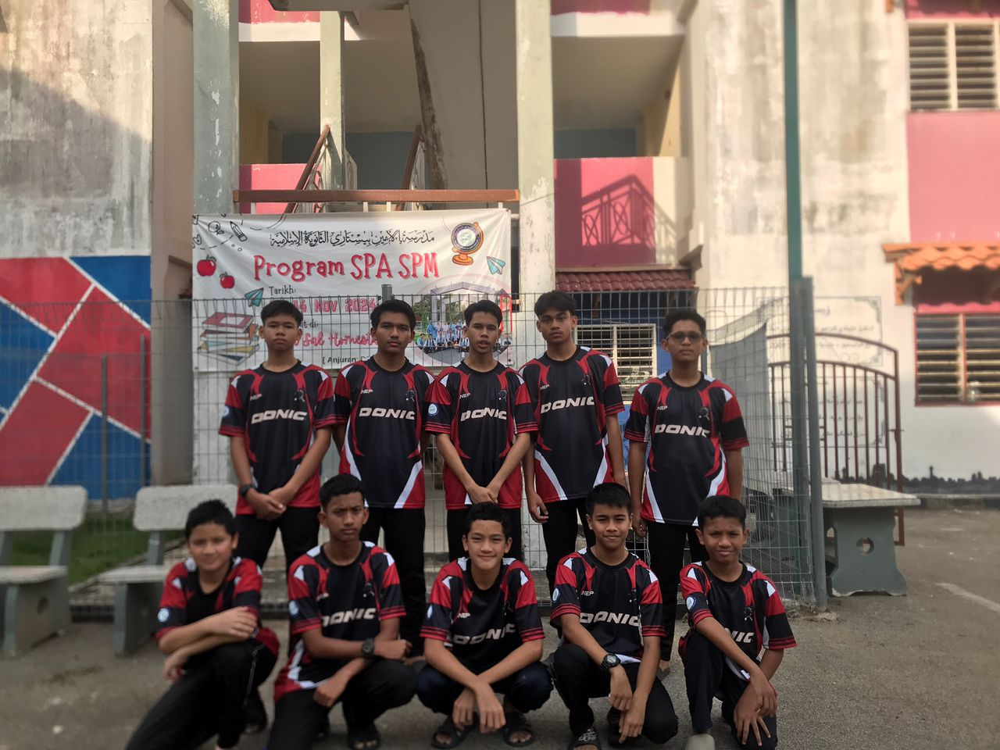
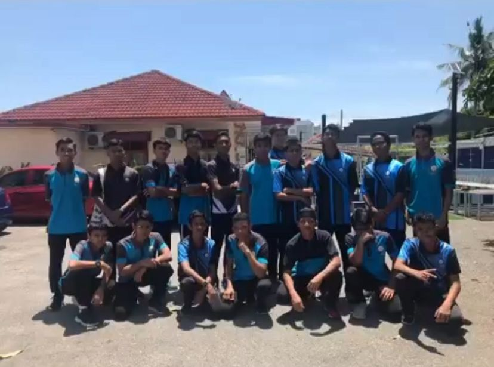
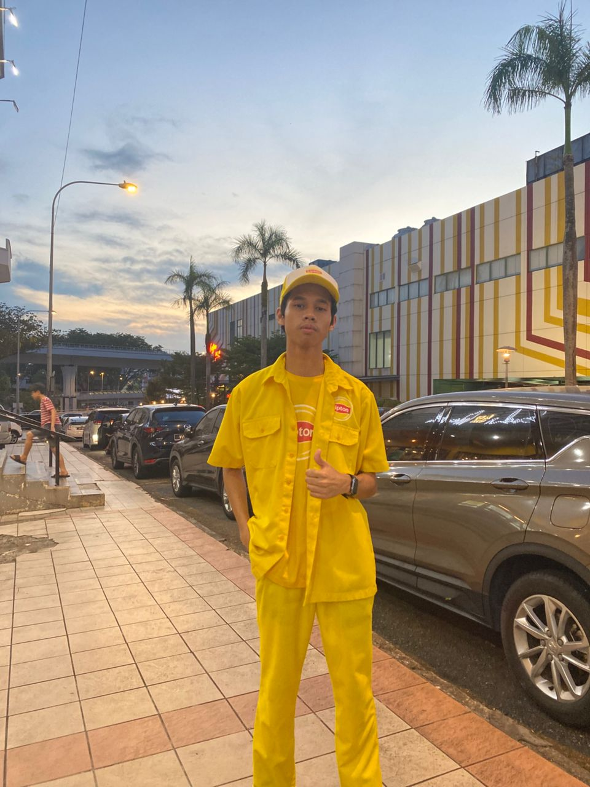
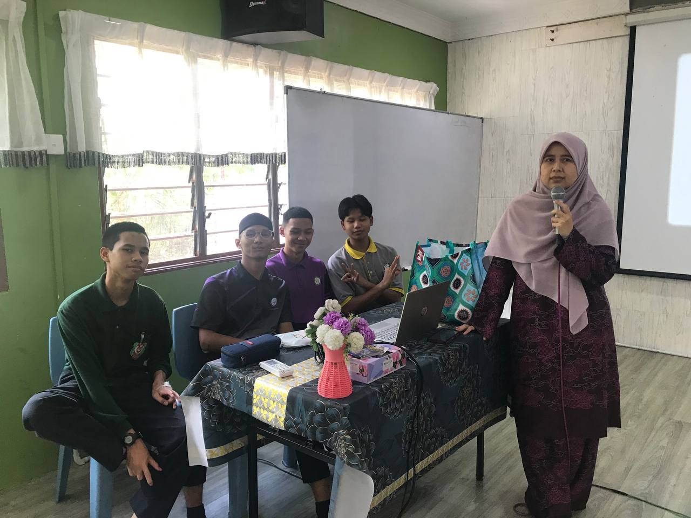

I'm currently pursuing my Foundation in Computing at Multimedia University,
driven by a deep admiration for my father—a seasoned Cybersecurity Expert
whose dedication to digital safety sparked my own interest in technology.
As an INFJ, I thrive in environments that value purpose, clarity, and long-term growth.
I enjoy learning through structured exploration, meaningful communication, and projects
that blend innovation with impact. Whether I'm analyzing systems or crafting thoughtful presentations,
I aim to create work that resonates quietly but powerfully.
Master HTML & CSS fundamentals
• Learning layout, styling, and responsive design to build clean, user-friendly websites with modern techniques.
Gain more job experience
• Exploring internships or part-time roles to apply skills, gain confidence, and grow professionally in tech environments.
Secure a scholarship for my degree
• Maintaining strong grades and actively seeking funding opportunities through academic excellence and leadership involvement.
Apply for Security+ Certificate
• Preparing for a globally recognized cybersecurity certification to validate knowledge and boost career readiness.
Save money for future goals
• Practicing smart budgeting to support education, certifications, and long-term personal development plans.
Goals Progress Table
Goal
Status
Master HTML & CSS fundamentals
In Progress
Aiming for a Scholarship
In Progress
Mastering in Excel
On Hold
Network+ Certificate
In Progress
Learning Plan (2-level list)
This plan outlines the key areas I'm focusing on to build a strong foundation in computing and cybersecurity.
Each item is chosen to align with my long-term goals and personal interests.
Coding Languages (2025–2026)
Python — For automation and data analysis
JavaScript — For interactive web development
Certificates (2026–2027)
Network+ — Understanding network infrastructure
Security+ — Building cybersecurity fundamentals
CySA+ — Advancing into threat detection and behavioral analytics
Advanced Skills & Experience (2027–2028)
Penetration Testing — Practicing ethical hacking and vulnerability assessment
Cloud Security — Securing AWS, Azure, or Google Cloud environments
Internship or Freelance Projects — Applying skills in real-world scenarios
Linux & Bash Scripting — Mastering system-level automation and security tools
CTFs & Cybersecurity Competitions — Sharpening skills through hands-on challenges
Achievements

Ping-pong school consultant
🏓 Ping-pong School Consultant
I represented my school in National-level competitions,
offering guidance to junior players and coordinating training sessions.
This role reflects my leadership, discipline, and strategic thinking.

Exco Media & Publicity
📸 Exco Media & Publicity
I Led visual content creation and event coverage as part of the student council.
I managed photography, Videography, and materials—showcasing creativity to promote my school.

Working experiences
🍋 Event Crew – Working Experiences
Gained hands-on experience in customer service and teamwork through brand activation events.
This built your confidence in public interaction and professional collaboration.
Young Innovators Challenge 2022
💡 Young Innovators Challenge 2022
Collaborated on a tech-based solution addressing real-world problems,
and presented your project to judges. This experience strengthened your innovation mindset and public speaking abilities.

Exco Technical
🛠️ Exco Technical
I supported the student council by handling technical setups, troubleshooting equipment,
and assisting with digital tools during events. This role highlighted my problem-solving skills,
adaptability, and attention to detail.
Skill Progression (Still in Progress)
HTML & CSS
Python
Teamwork & Communication
Leadership
Videos I watched to improve my knowledge in HTML & CSS!
These videos helped me understand how HTML and CSS work together to build structured, visually appealing websites. I especially appreciated the hands-on examples and clear explanations, which made it easier to apply the concepts in my own projects.
Reflection
My learning journey has been shaped by curiosity, structure, and a desire to create meaningful work.
Studying Foundation in Computing at Multimedia University has helped me explore how technology works
beneath the surface, and this path was inspired by my father, a Cybersecurity Expert, whose passion for
digital safety sparked my own interest in tech.
As someone with an INFJ personality, I tend to approach learning with quiet focus and long-term purpose.
I enjoy thinking deeply, organizing ideas clearly, and finding solutions that balance both logic and creativity.
Whether I’m researching foldable laptops or improving my communication skills,
I aim to grow in ways that are thoughtful and impactful.
This journey has taught me not just technical knowledge,
but also how to express ideas confidently and adapt to new challenges.
I believe learning is most powerful when it’s connected to real goals—and I’m excited to keep building toward mine.